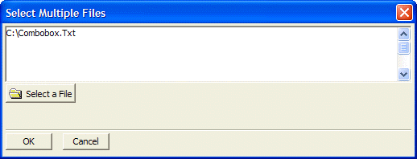

Select Multiple Files Dialog Box
Use the Select Multiple Files dialog box to add attachments to the email message.
Click Select a File to browse for files on your computer to add to the list. Press OK to attach the file(s). You can also use the Expression Builder or prefix the entries with "=" to use expressions.
Click OK to continue or Cancel to discard your selections.

Supported By
Alpha Five Version 5 and Above